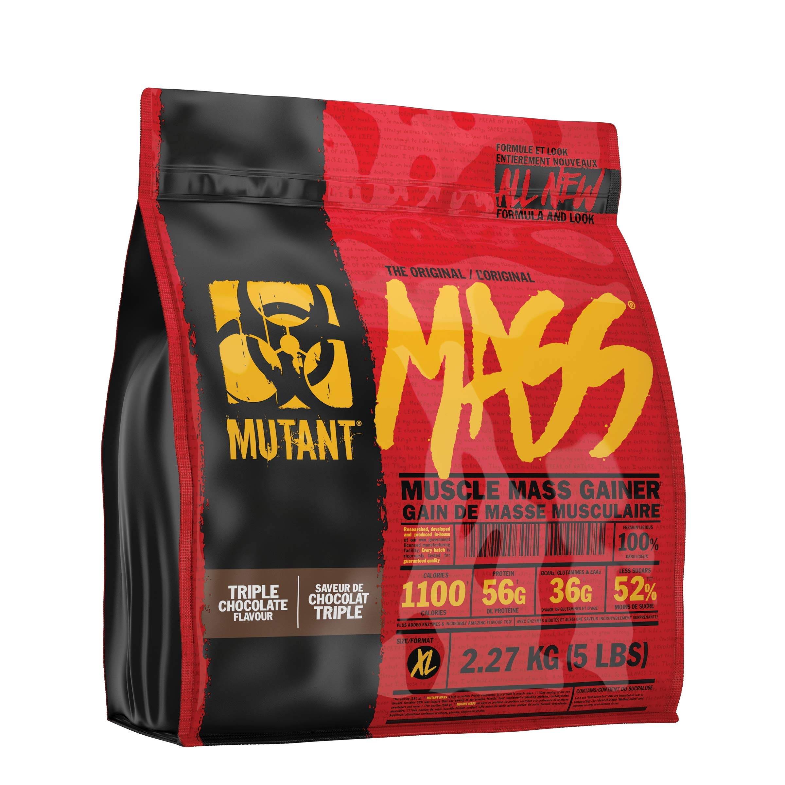

Mass Gainer

Mass gainer shake with creatine
Great to take with lunch or as a snack.
Questionable health benefits. Tastes good though, and it's a
consistent source of creatine!
Ingredients
-
Mass gainer (I use Mutant Mass but you can experiment with different
options)
- Creatine
- Water or milk
Steps
- Put 1 scoop of creatine in a glass.
-
Add a bit of water (this prevents the mass gainer from sticking to the
bottom). I'm using water for this recipe but if you'd prefer milk please
use milk instead wherever you see water.
- Add 1 serving of mass gainer.
- Fill up with water.
- Stir.
- Add additional water if necessary.
Home